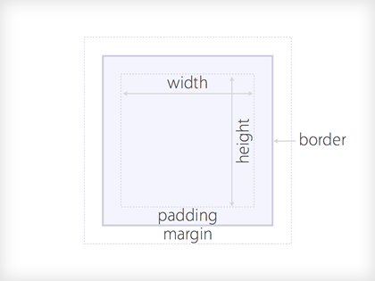

el modelo de caja
Cada elemento rectangular que tengamos que pintar en html responderá al modelo de caja.
Cuando necesitamos que algo se ajuste a un ancho o alto concreto tenemos que tener en cuenta que:
ancho total = borde izq + padding izq + ancho + borde dcho + padding dcho
alto total = borde sup + padding sup + ancho + borde inf + padding inf
La mayoría del tiempo que pasamos arreglando bugs lo hacemos aplicando hacks para que el modelo de caja se comporte como se supone que se debería de comportar en todos los navegadores.
Echadle un vitazo a este post para ampliar un poquito la información.